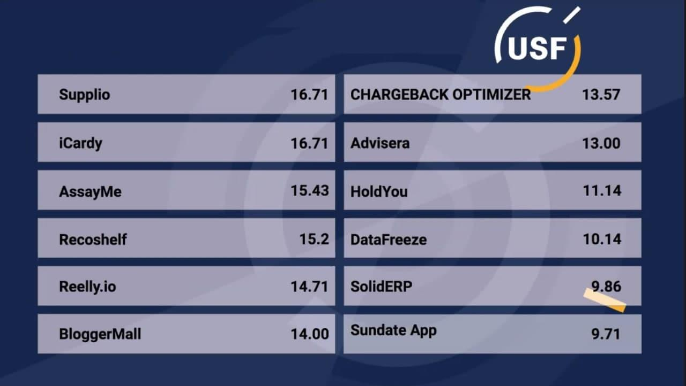

News
Recoshelf Wins A National Startup Fund Grant From USF
Recoshelf is a Retailtech startup that develops solutions to automate in-store operations, specifically inventory. These solutions make use of cameras, computer vision, and artificial intelligence to scan the shelves of products and provide real-time reports about product availability, planogram, and prices.
Based on the data collected, store staff can be automatically notified about restocking requirements promptly. Thus, our mission resonates well with the needs and trends of the modern world for digitization.
Recoshelf ideally intends to free store personnel from their routine work and help improve the overall efficiency of retail practices. Therefore, our ultimate goal is to cut operating costs, improve consumers’ loyalty and safety, give retail and FMCG managers better control over the shelves, make shelf functioning more visible, decrease waste, and improve the experience of consumers. [...]
USF grant program application
Startups burn through capital, especially machine-learning startups. At Recoshelf, we were looking for money to invest in our camera assistant software startup project. It appeared more complex than we’d initially thought.
As per the usual financial projections for startups, our angel investment fund did not cover our growing expenses. This led to us applying for a local Ukrainian Startup Fund call. This fund invests $25k to pre-seed and $50k to seed-stage companies.
For us, it was a great opportunity as this fund does not take equity, stated Yaroslav Parkhisenko, CEO of Recoshelf. This is especially important as the dilution of the founder’s share at such an early stage may negatively influence future rounds of investments.
Moreover, it took 4 months to prepare a quality application to pitch. We also hired three team members for our Machine Learning project and needed more cash, commented Mykyta Holubakha, CTO.
At the National pitch of tech startups ideas that took place on November 27, we met other professionals that owns several startup pages, and really enjoyed the other innovative pitches, especially the IoT ideas. When it came to the questions to ask before investing in a startup, the judges drew our attention to our shortcomings and indicated areas for improvement.
This was an eye-opener for us. Such events not only provide great investment opportunities but also allow for networking and establishing useful connections.
About Recoshelf Technology
The recent progress in IoT and neural networks, the big success of Amazon Go, and robotized warehouses have pushed retail to digitization. Nevertheless, the Coronavirus pandemic has further accelerated this transformation that powers IoT majorly due to human impact, contact limitation, and wage increase issues.
Hence, we at Recoshelf believe that we are offering our automation solution to the market at the right time. We skillfully install computer vision solutions that utilize IoT cameras to monitor the products in a fully automated manner. Data is then interpreted with the use of convolutional neural networks and computer vision.
We also provide numerous benefits like high flexibility, short rollout time, and low power mode camera, a low resolution that is still good enough for high detection accuracy.
Additionally, our solution has zero to low CAPEX investment requirements for implementation in view of not only the above advantages but also our marketing approach. We have an API that an IoT engineer can easily integrate into an existing ERP system of retailers to utilize our data in warehouse management, automatic pre-ordering, or other subsystems.